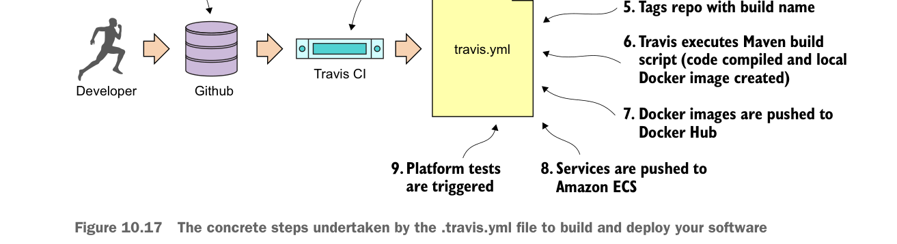

The concrete steps undertaken by the .travis.yml file to build and deploy your software
- GitHub account notification. Travis CI will start a virtual machine that will be used to execute the build. Travis CI will then check out the source code from GitHub and then use the
.travis.ymlfile to begin the overall build and deploy process. - Travis CI sets up the basic configuration in the build and installs any dependencies. The basic configuration includes what language you’re going to use in the build (Java), whether you’re going to need Sudo to perform software installs and access to Docker (for creating and tagging Docker containers), setting any secure environment variables needed in the build, and defining how you should be notified on the success or failure of the build.
- Before the actual build is executed, Travis CI can be instructed to install any third-party libraries or command-line tools that might be needed as part of the build process. You use two such tools, the
travisand Amazonecs-cli(EC2 Container Service client) command-line tools. - For your build process, always begin by tagging the code in the source repository so that at any point in the future you can pull out the complete version of the source code based on the tag for the build.
- Your build process will then execute the Maven scripts for the services. The Maven scripts will compile your Spring microservice, run the unit and integration tests, and then build a Docker image based on the build.
- Once the Docker image for the build is complete, the build process will push the image to the Docker hub with the same tag name you used to tag your source code repository.